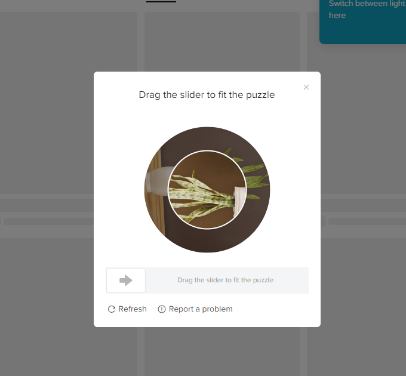

Tiktok Crawler
A custom Python crawler written in Selenium for downloading Tiktok videos as mp4 files along with their metadata in a json file (author, tags, captions, etc.). Some key features of this project are: 1. Download videos from the for you page 2. Download videos based on search parameters
NOTE 📝
This does not implement VPN or proxies for geolocation changes, meaning the Tiktok videos in the for you page will depend on the location of the machine where this library is run. If you are in the Philippines then the videos will be based on the for you page in the Philippines.
How To Use:
View the following files to see how to use the crawlers:
1. run_search_tiktok_videos.py
Uses the class crawler.search.SearchCrawler to crawl the results of the search page from the given search parameter.
IMPORTANT ❗
As of writing, the class is unable to bypass Tiktok's captcha for the search results page. As a work around, the user needs to solve the captcha manually for the crawling to proceed. The program will timeout if the captcha is not solved after 60 seconds.

2. run_get_foryou_videos.py
Uses the class crawler.foryoupage.CrawlerForYouPage to crawl Tiktok videos in the for you page.
Output
The output after running the functions above are json files containing the metadata and mp4 files of the tiktok videos. Each json file and mp4 file is a single tiktok video. They are identified by an internal id, meaning one tiktok video may have an id like f019457f-e39a-4601-9247-95e067864425. The crawler functions will generate a f019457f-e39a-4601-9247-95e067864425.json and f019457f-e39a-4601-9247-95e067864425.mp4 file.
f019457f-e39a-4601-9247-95e067864425.json:
{
"id": "f019457f-e39a-4601-9247-95e067864425",
"Author": {
"uniqueid": "thecongtv",
"nickname": "Cong Clothing",
"link": "https://www.tiktok.com/@thecongtv",
"avatar": "https://p16-sign-sg.tiktokcdn.com/aweme/100x100/tos-alisg-avt-0068/0292a1222969f10c614b327d93596135.jpeg?x-expires=1672488000&x-signature=rj5wD2aivUEyqkBkYFldu1i6lIY%3D",
"element": "...", "Status": null
},
"Caption": {
"tags": [],
"text": "mali ng naabutan si kuya..",
"element": "<span class=\"tiktok-j2a19r-SpanText efbd9f0\">mali ng naabutan si kuya..</span>"
},
"Music": {
"title": "original sound - Cong Clothing",
"link": "https://www.tiktok.com/music/original-sound-Cong-Clothing-7182437371232209690",
"element": "..."
},
"Media": {
"link": "https://v16-webapp.tiktok.com/ea97a18c29595d41864754122d9dd471/63adda6c/video/tos/useast2a/tos-useast2a-pve-0037-aiso/owWzfA0MpBDhwWItIQLOhNp9nJ1hxUAaGhuKo0/?a=1988&ch=0&cr=0&dr=0&lr=tiktok&cd=0%7C0%7C1%7C0&cv=1&br=3584&bt=1792&cs=0&ds=3&ft=H3bLjvT4Q9wUxdYCt2HC~MiygGa-W.RUX17S2a6a-x4kS&mime_type=video_mp4&qs=0&rc=OTw7ZjZmaDtlZDM7OzszPEBpampsOTY6ZnhsaDMzZjgzM0AtM2M0NC0zNS0xMjAvLTA2YSNocWozcjRnNWpgLS1kL2Nzcw%3D%3D&l=20221229121934E761197971B88621B22F&btag=80000",
"element": "..."
},
"Metrics": {
"likes": "76.2K",
"comments": "246",
"shares": "212",
"as_of": "2022-12-29T20:19:30.194738",
"element": "..."
}
}